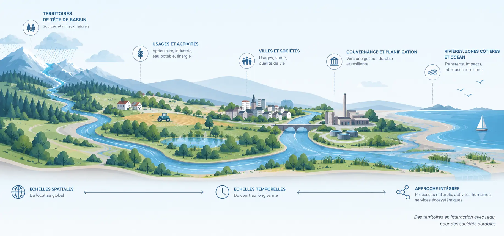

Des déficits plus longs
Les périodes où les débits passent sous les seuils historiques s’étendent au cours du siècle dans les scénarios testés.
Le signal climatique n’est pas directement le signal hydrologique. Entre les deux interviennent stockage souterrain, géologie, organisation des écoulements, barrages et usages. Nos travaux cherchent à identifier les variables hydrologiques qui deviennent réellement limitantes pour les territoires.
Les ressources disponibles dépendent de la recharge, du stockage, de l’alimentation des cours d’eau et de l’état initial du système. Deux années climatiquement proches peuvent produire des conséquences différentes si elles succèdent à des séquences hydrologiques différentes. Les projections climatiques doivent donc être traduites en variables de fonctionnement : niveaux de nappe, débit des cours d’eau, intermittence, remplissage des retenues et durée des étiages.
Les modèles sont soumis à plusieurs projections climatiques afin de produire non pas une trajectoire unique, mais une enveloppe de futurs possibles. L’analyse porte notamment sur la durée des faibles débits et la succession d’années déficitaires.
Le résultat opérationnel n’est pas seulement « moins d’eau » : il concerne le moment où certaines fonctions deviennent contraintes — soutien d’étiage, dilution des rejets, remplissage des retenues ou interconnexion entre systèmes d’alimentation.

Les périodes où les débits passent sous les seuils historiques s’étendent au cours du siècle dans les scénarios testés.
La succession d’années sèches devient un facteur déterminant car les stocks n’ont pas toujours le temps de se reconstituer.
Remplissage des barrages, étiage des cours d’eau, rejets traités et disponibilité des ressources doivent être étudiés ensemble plutôt que séparément.
En Normandie, le changement climatique pose aussi la question inverse : non seulement le manque d’eau, mais la vulnérabilité aux remontées de nappe et aux interactions entre aquifères côtiers, topographie et niveau marin.
La démarche reste similaire : caractériser le fonctionnement du système, calibrer les modèles sur les observations disponibles, puis identifier les zones et situations vulnérables. La question scientifique est de comprendre comment le sous-sol transforme un forçage régional en conséquences très locales.

Ma contribution dans cette thématique consiste à articuler modèles hydrogéologiques parcimonieux, données de terrain et scénarios climatiques pour faire émerger des variables directement liées au fonctionnement des ressources. Le travail s’est développé avec Alexandre Gauvain, Luc Aquilina, Bastien Boivin, June Sallou, les collègues d’IRISA et les partenaires gestionnaires des ressources en Bretagne et en Normandie.
Chaire Eaux & Territoires — articulation entre recherche sur les ressources et situations concrètes de gestion.
Rivages Normands 2100 — risques hydrogéologiques littoraux et remontées de nappe.
HydroModPy / FutureFlow — amélioration de la comparabilité et du déploiement multi-sites des modèles qui sous-tendent les projections.